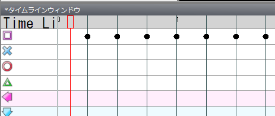

標記在時間軸窗口中放置。

在均勻排列的黑色豎線上雙擊，即可放置標記。
垂直位置決定標記的種類。暫且在方塊的水平位置上，沿著豎線雙擊放置。

變成上圖那樣後，試著播放視頻。
應該能聽到鈴鼓的聲音，但節奏可能對不上（如果聽不出是否對不上，可以再多放置一些標記）。因此要讓節奏和豎線的位置對齊。
將鼠標移到時間軸窗口左上角寫著“TimeLine”的部分（可能顯示不全）。
在那裡左右拖動，所有標記都會平移。
適當平移並反覆播放，讓標記的位置與節奏吻合。
吻合之後，再調整豎線使其穿過標記。
在BPM輸入框右側的BPMOffset文本框中輸入適當的值，使豎線穿過標記。
BPMOffset的取值最小為0，最大為BPM的數值。

根據環境不同，PPDEditor和PPD中擊打音的時間聽起來可能不一樣。
因此，可以從PPDEditor輕鬆地在PPD上進行測試。
從遊戲菜單中選擇適當的項目，就會打開PPD的窗口，可以在PPD中游玩。
請調整到在PPD中聽起來正確為止。

這樣放置標記就變得簡單了。
接下來，一邊播放視頻，一邊配合人聲的節奏放置標記即可。
標記的種類最好先固定為一種（之後可以輕鬆更改）。
刪除標記時，選中標記（變成藍色即為選中狀態）後按Delete鍵。
也可以通過範圍選擇一次刪除多個標記。
下一步